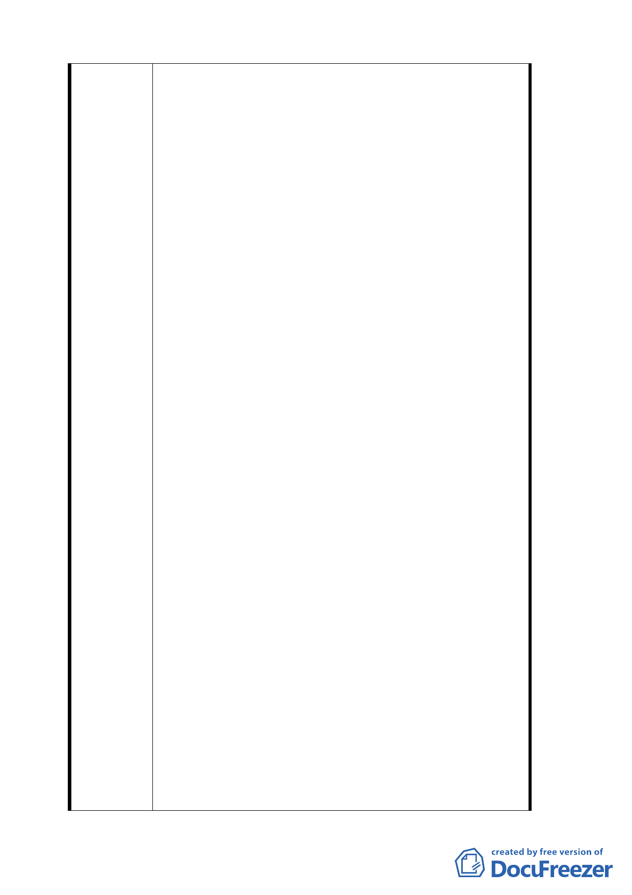

貳、參考案例
ㄧ、臺北市文山區木柵路五段附近地區都市計畫案
1.範圍與現況
本案計畫範圍位於木柵路五段北側暨木柵路五段以南高灘地，
西鄰北二高臺北聯絡線萬芳交流道、東臨木柵交流道，北臨北
二高邊坡用地，南隔景美溪與市立動物園相望，面積約十五公
頃；本計畫範圍多為保護區，基於前述整體環境變遷需要及文
山區未來發展趨勢，本計畫區須就整體空間定位檢討。
2.規劃目的與構想
為促進土地有效利用並結合鄰近山水遊憩資源，因應週休二日
至本地區遊客之服務需求，實需規劃適當遊憩活動支援空間，
並提供休閒產業發展環境，以創造本市兼具休閒遊憩與居住特
色之生活機能區，爰辦理都市計畫變更。
3.計畫內容摘要
配合本地區產業結構，計畫發展休閒產業，以導入餐飲、住宿
等服務為主，融合河岸、山林休閒活動，維持全區自然山水資
源視覺景觀，規劃商業區、住宅區，面積約六‧九公頃，提供
發展精緻觀光休閒商業活動，除滿足地區性商業需求，並可提
供休閒遊憩所需住宿、餐飲等休閒服務需求。
配合經濟部水利署調整恢復景美溪八十二年堤線，變更保護區
為河川區。
公共設施計畫，本計畫區必要性公共設施用地，包括 1.公園用
地暨綠地：提供地區公共開放空間，並與鄰近山水景觀融合，
以串聯河岸休憩及休閒商業之活動，共計六處。2.天然氣減壓
站用地：配合中油公司國家重大建設，劃設天然氣減壓站乙處，
以充分供應大臺北地區家用天然氣及維護公共安全。其餘為.
道路用地。
4.辦理情形
本案未來開發將採「區段徵收」方式進行，為辦理計畫地區整
體規劃，主要計畫業於 93 年 6 月 10 日起公開展覽，93 年 7 月
29 日本市都市計畫委員會審查決議成立"專案小組"續行審議,
並於 94 年 4 月 16 日經第三次專案小組決議原則通過,並提交大
會審查。
二、變更臺北市北投區二號機關用地及Ｐ二○號道路用地附近地區
主要計畫案
1.範圍與現況
本計畫範圍位於光明路與磺港溪交叉口以北、七虎公園以南所
圍地區，計畫範圍面積計約二‧○○公頃。早期國軍來臺，沿
磺港溪興築球場及眷舍而居（即目前之七虎球場及七虎新村），
其後發布都市計畫，因公共設施用地地上物無法處理，遲遲未
能開闢，使該地區長久以來一直無法配合周邊地區之發展，亦
造成該地區建物老舊、防火堪虞、實質環境寙陋及都市景觀之
衰敗。
2.規劃目的與構想
因編號Ｐ二○號道路及二號機關用地已無開闢需求，考量都市
23